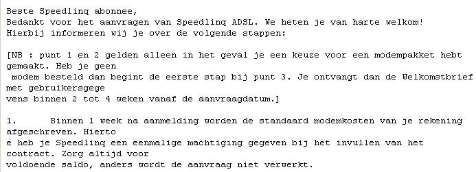
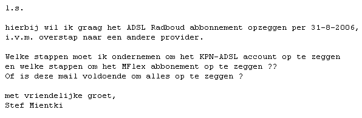
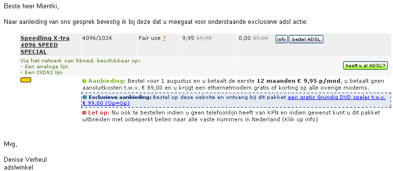
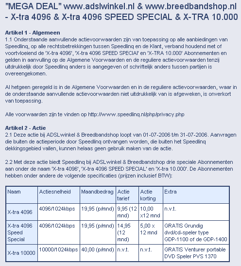
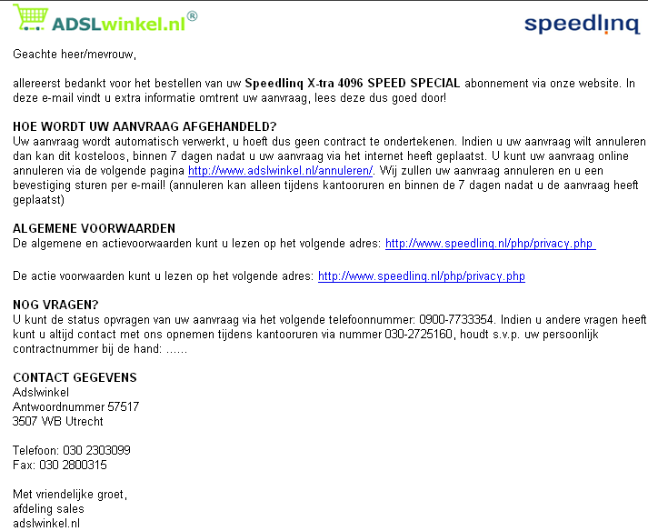
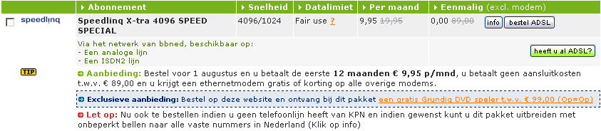

Going to Speedlinq or not ?
Op de pagina registreer ik in kortschrift bij de ervaringen bij de overgang van KNP-ADSL naar SpeedLinq-ADSL (ook van KNP).
De pagina is in omgekeerd chronologische volgorde opgebouwd, behalve de eerste paragraaf, waarin de actuele stand van zaken is te zien.
Actuele stand van zaken
19-7-2006, 17:05, bevestiging speedlinq
Als deze brief staat voor de kwaliteit van speedlinq ???

19-7-2006, 17:00, Stafinfo helpdesk, hoe op te zeggen

19-7-2006, 15:20, bevestiging prijs

19-7-2006, 15:18, wat kleine lettertjes
De prijs is nu ineens gestegen van 9.95 naar 14.95 voor het eerste jaar ???
Telefonisch contact met ADS-winkel (0.45 Euro/minuut), wordt zeer snel geholpen en de juffrouw garandeert mij dat 9,95 de juiste prijs is en zal mij dit per email bevestigen.
Overigens zijn er nog heel wat meer kleine lettertjes, om eens rustig door te lezen.

19-7-2006 , 15:17, bevestiging bestelling

19-7-2006 , 15:15
Aanmelding bij Speedlinq, deze provider leverde enekel maanden geleden nog niet in mijn regio.
